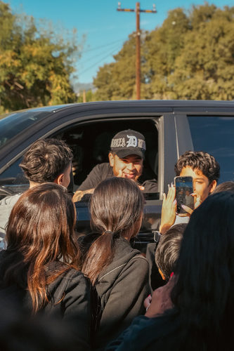
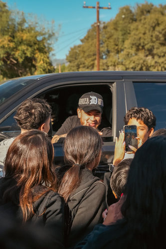
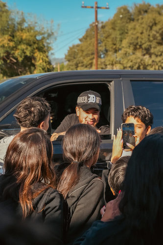

Giovanny Elizarraraz
Hello! Nice to meet you, people call me Gio! Im a first- gen college student with a passion for learning about the mind and human behavior. Currently, I'm majoring in neuroscience and psychology, a combination that allows me to mix both of my interests. I can explore how our brains shape who we are, how we think, and what is the best way to use digital media to motivate and educate my community and potentially others. In my opinion perfectly combining the contexts of modern media, technology, and all in which came before us. 🌴
Alongside my studies, I have a strong interest in digital media, marketing, production, and cinema.🎦 I've always been captivated by how stories are crafted and then conveyed to audiences. Also, how effective media is and can be and the resonance it carries on an emotional level and cognitive level. Storytelling in films, to the design process of marketing campaigns - I'm fascinated by it all and the impact individuals can have on public perception and behavior. As simply as just wielding a camera and sharing your perception of a concept. I currently work in the world of higher-ed, where I blend my academic background with hands-on marketing experience. This role allows me to apply concepts from my education to real-world experiences to my strategies. Enabling me to connect with students, staff and faculty in ways that are both meaningful and effective. I particularly focus on integrating industrial organizational (I/O) principles into my marketing work, as this area offers valuable insights into human behavior in structure, goal-oriented environments.
Industrial and Organizational Psychology emphasizes the sciecne of human behavior in the workplace which ties perfectly into marketing roles. By understanding motivation, group dynamics, leadership, and communication - i can understand the best route to success. What i do is incorporate these skills and create campaigns that resonate more deeply with my target audience. And also can expand that further when needed to reach exsternal groups. Through this work, I've developed an appreciation for the overlap between marketing and psychology, particularly in higher education. This field is unique in that it requires a deep understanding of how to communicate with a wide range of people. From prospective students to long-time faculty members. My knowledge of I/O psychology has been essential in crafting myself and building strategies that are both purposeful and empathetic, contributing to a more connected and motivated community. As I look to the future, I'm excited to continue my love of neuroscience, psychology, and marketing. I hope to keep exploring the intersections of these fields, using my knowledge to make impacts in education, and beyond. Whether through storytelling in film, digital content, or academic outreach - I am committed to using my unique blend of skills to foster understanding, inspire action, and create meaningful connections.
Experience
Marketing Specialist
• Developed marketing campaigns for local small businesses
• Speaker at education conferences
• Experience with HTML, Photoshop
Administrative Officer
• Responsible for oversight of a department at a private company
• slight teaching experience
• counseling experience
Content Producer
• Ran sessions to help students learn how to create short films
• Reviewed and graded student media projects
• Created educational content to help promote student education
• Trained over 100 students each academic quarter
Education
UC Riverside
Portfolio
 

